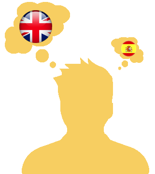
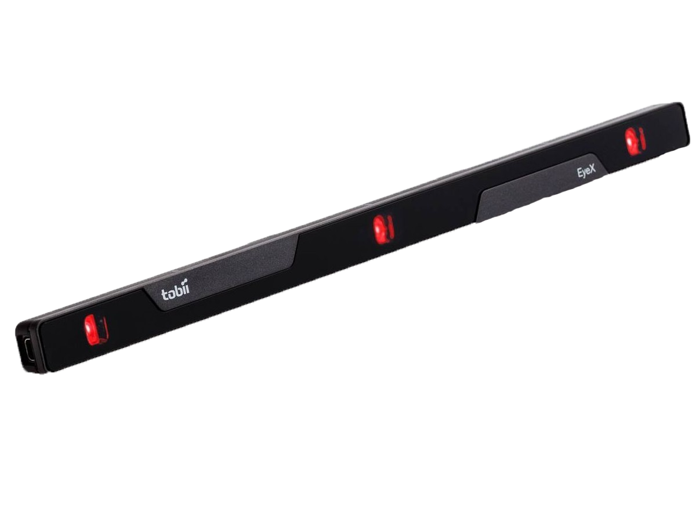

SeeToLearn, la méthode innovante et autonome d'apprendre une nouvelle langue
2/3

sur 65 millions
des Français ne parle aucune langue étrangère couramment
pour l'anglais 1/5 le parle couramment
1/3
des Français estime qu'il est utile d'apprendre une langue étrangère
diversité des langues en France
400
langues et dialectes
14%
Lv1 arrive à un bon niveau
11%
Lv2 arrive à un bon niveau
40%
des Français ont un bon niveau
25ème
rang dans le classement du le test international anglais
Eye Tracking
mesure des mouvements des yeux
Infrarouge
inoffensif pour l'oeil
Inscription sur le site
Réception de l'EyeTracker
Installation de l'EyeTracker avec la documentation du site
Commencer à lire un texte
L'EyeTracker suit vos yeux avec de l'infra-rouge
Identification des mots lus
Comparaison avec la base de données
Proposition de nouveaux textes plus compliqués
Langue apprise, place à la pratique